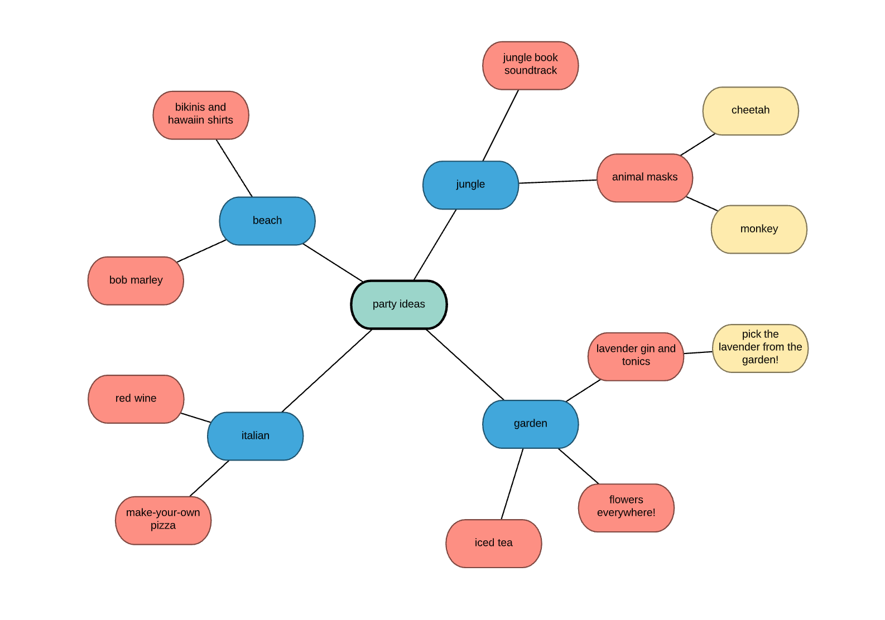

Brainstorming é uma técnica utilizada para propor soluções a um problema específico. Consiste em uma reunião também chamada de tempestade de ideias, na qual os participantes devem ter liberdade de expor suas sugestões e debater sobre as contribuições dos colegas.
Agora você entendeu oque é e quais são suas regras, vamos ver um exemplo de brainstorm:
Atrair mais clientes: O poblema em questão é: Como atrair mais clientes? Com esse ponto de partida, várias ideias podem ser colocadas à mesa, como:
Os mapas mentais são muito eficientes em organizar e desenvolver ideias e pensamentos. O foco é proporcionar uma visão mais clara e completa do processo criativo, o que é fundamental para o surgimento de outros insights.
Assim, pegamos uma ideia considerada central e a colocamos em um ponto de destaque. A partir daí, é criada uma espécie de fluxograma, possibilitando a ramificação e exibição de ideias secundárias. Nesse processo, é muito importante usar recursos gráficos, como figuras, desenhos, quadros etc.
Exemplo de um mapa mental:
